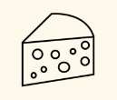
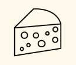

Smag
Gouden Carolus Christmas er en juleøl med masser af kraft og smag. Den byder på en stor og fyldig tur rundt i både maltens sødme og julen krydderier. Den smager og dufter af karamel, anis og flere af julens krydderier.
 

Denne fantastiske julebryg fra bryggeriet Het Anker i Belgien, bør være førstevalget på det danske julebord, der perfekte match til juleand, brune kartofler, rødkål og naturligvis også risalamanden.
Type:
Juleøl (Dark special)
Alkohol pct.:
10,5%
IBU:
11
Oprindelse:
Mechelen, Belgien
Bryggeri:
Het Anker
Ingredienser:
Vand, bygmalt, byg og belgisk humle
Øllets historie
Efter en pause på 38 år startede Het Anker igen med at brygge Christmas Ale. Det er gået dem godt, og Gouden Carolus Christmas betegnes af mange som den bedste juleøl. Den fyldige smag skyldes, at den er lavet på 3 forskellige slags humle, 6 forskellige slags urter og krydderier, samt at juleøllen brygges i August måned, og lagres indtil jul, hvor den er klar til at blive nydt. Absolut en "Top World Beer".